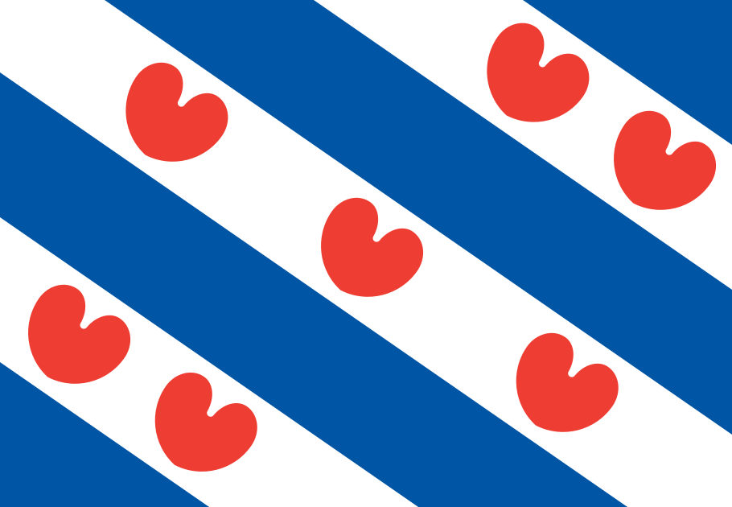

Daymakers Utrecht
Utrecht, Nederland
Daymakers Favourite Timezones
Daymakers Utrecht
Utrecht, Nederland

MHB Joure
Joure, Nederland
Hartmann Oakland
Oakland, California, Verenigde Staten
ITA Des Moines
Des Moines, Iowa, Verenigde Staten
Hartmann/ITA Atlanta
Atlanta, Georgia, Verenigde Staten